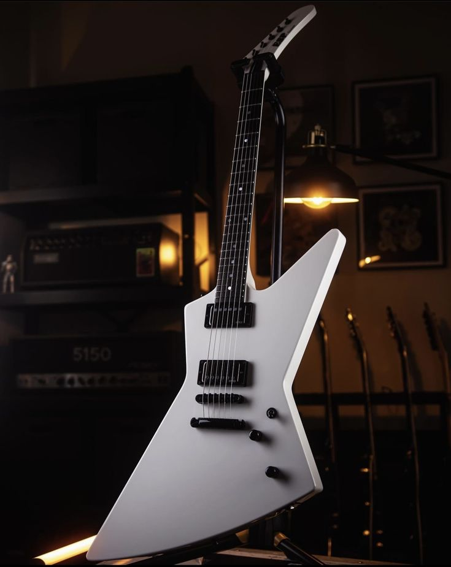
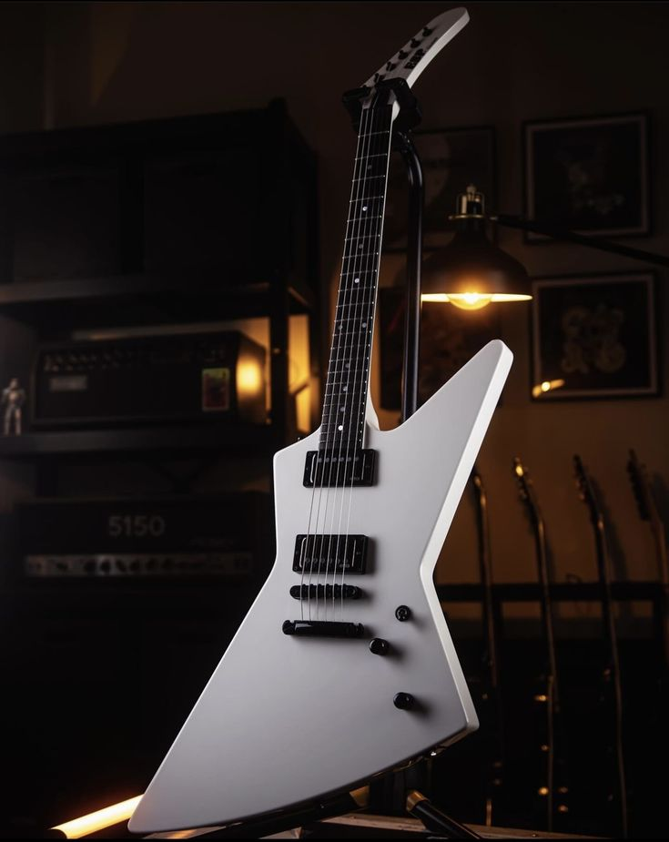

The guitar is a musical instrument whose main function is to produce music. It is composed of a body, neck, frets, strings, tuning pegs, pickups, and bridge. The guitar is a very versatile instrument, being used in various musical styles, such as rock, blues, jazz, samba, among others. There are several types of guitars, such as the electric guitar, acoustic guitar, classical guitar, semi-acoustic guitar, 12-string guitar, among others. Each type of guitar has its specific characteristics, such as tone, volume, weight, among others. The guitar is a very popular instrument, used by both professional and amateur musicians.
 
